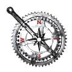

Featured Rides
Each day has at least 2 featured
rides to choose from, which offer some support. If you choose,
you may of course ride anywhere you want, self-supported.
Thursday heads up to
Quincy via various options – either the standard road options or you
can try some of the routes with some gravel and almost no traffic.
Friday features
roads to the south of Wenatchee. You will find very little traffic
on these roads as the southern roads all turn to gravel.
On Saturday we
head east across the Columbia River with a variety of routes and distances
to choose from. All routes have at least 3500 feet of climbing
as they all head up Badger Mountain at 4000 feet.
Lake Chelan is our destination
on Sunday. The long route is 125 miles (200 kilometers)
and does as much of a loop around Lake Chelan as is possible.
The short route is 76 miles (120 kilometers) and is an out and back
to Lake Chelan. Neither route has much climbing, though expect
some challenging winds along the Columbia River.
Finally on Monday
we head up to Plain and Lake Wenatchee, with a wonderful return on Route
2 through Tumwater Canyon and Leavenworth. The short route is
64 miles from Cashmere, while the long route adds 25 miles from East
Wenatchee to and from Cashmere.
Notes
- While this year NW Crank is only 4 days, it’s expected some riders will extend their base even
further with rides on Tuesday and Wednesday. There will be several
extra routes included; you are invited to use these routes and hook
up with other riders for additional rides, though they won’t be supported
or part of this year’s event.
- If you have any suggestions
for alternate routes or roads, with or without reasonable gravel sections,
please send them along.
- While we’ve done a lot of
work regarding the routes, not everything is finalized. If you were
there last year, the format and routes will be similar.
- All distances are pretty close but may be off by a couple miles.
- All elevation gains are estimates
only.

Thursday – Quincy and Beyond
Routes
Cue sheet (Excel format).
Description
Thursday is a great warmup
day since it’s one of the flatter days. From East Wenatchee
the route heads south and east for an out-and-back to Quincy and Ephrata
along SR-28 and then some backroads. While there’s only one
stairstep climb on the way out, there’s always the possibility of
wind along the Columbia River to contend with.
All routes have a about half
of the day on SR-28 which has wide shoulders and good surface for almost
all of it.
Support
There will be support available
at the intersection of Baird Springs Road and SR-28. This is 23
miles from the start and depending on how long you ride will determine
what mileage you hit on the way back. This stop will be open from
10:30am – 3:30pm.
Routes
Short
| Distance |
46 miles |
| Climbing |
Est. 1000-1500 feet of climbing |
| Description |
East Wenatchee to Baird Springs
Road and back including Rock Island Road on the way out, and a climb
on Batterman Road on the way back. |
| Climbs |
This route has 2 climbs of
significance – a stairstep climb up to Baird Springs Road where you
will turnaround and then a climb on Batterman Road. |
| Support |
Mile 23 10:30am – 3:30pm |
| Services |
Mile 15 at Palisades Road,
Mile 31 at Palisades Road. |
Medium
| Distance |
61 miles |
| Climbing |
Est. 1500-2000 feet of climbing |
| Description |
East Wenatchee to Quincy and
back including Rock Island Road on the way out and a climb on Batterman
Road on the way back. |
| Climbs |
This route has 2 climbs of
significant – a stairstep climb up to Baird Springs and continuing
to Quincy and then a climb on Batterman Road. |
| Support |
Mile 23 10:30am – 3:30pm
Mile 38 10:30am – 3:30pm |
| Services |
Mile 15 at Palisades Road,
Mile 30 at Quincy, Mile 45 at Palisades Road. |
Long
| Distance |
95 miles |
| Climbing |
Est. 2000-2500 feet of climbing |
| Description |
East Wenatchee to Ephrata
and back including Rock Island Road on the way out and a climb on Batterman
Road on the way back. Between Quincy and Ephrata is a wonderful
sideroad called Martin Road. |
| Climbs |
This route has 2 climbs of
significant – a stairstep climb up to Baird Springs and continuing
to Quincy and then a climb on Batterman Road. |
| Support |
Mile 23 10:30am – 3:30pm
Mile 72 10:30am – 3:30pm |
| Services |
Mile 15 at Palisades Road,
Mile 30 at Quincy, Mile 47 at Ephrata, Mile 64 at Quincy, Mile 80 at
Palisades Road. |
Long (semi Adv)
| Distance |
100 miles |
| Climbing |
Est. 2500-3000 feet of climbing |
| Description |
East Wenatchee up through
the Palisades valley to Sagebrush Flats, then Ephrata and return via
Martin Rd and SR-28 |
| Climbs |
Palisades Valley is a gentle
uphill with 2 steep parts on the gravel section. Sagebrush Flats
also has some climbs returning to Ephrata. And finally a climb
on Batterman Road. |
| Support |
Mile 75 10:30am – 3:30pm |
| Services |
Mile 15 at Palisades Road,
Mile 50 at Ephrata, Mile 67 at Quincy Mile 85 at Palisades Road. |
NOTES:
- This route has an extended stretch through the Palisade Valley and Sagebrush Flats
with no services.
-
This route includes 2.5-3.0 miles hard pack rideable with 25s and 3.5-4.0 miles of gravel
– better with 27s. The trade-off is 3.5 miles of gravel
versus 16 miles of SR-28.
Adventure Routes
Adventure 1
| Distance |
97 miles |
| Climbing |
Est. 3000-3500 feet of climbing |
| Description |
Start with everyone else along
SR-28, then turn off on Baird Springs Road to Sagebrush Flats and Ephrata,
returning via Martin Road and SR-28. |
| Climbs |
There is a stairstep climb
up to Baird Springs Road. Baird Springs Road itself is a long
gradual climb from 900 feet of the intersection with SR-28 to 2600 at
Monument Hill. And finally a climb on Batterman Road. |
| Support |
Mile 23 10:30am – 3:30pm
Mile 72 10:30am – 3:30pm |
| Services |
Mile 15 at Palisades Road,
Mile 50 at Ephrata, Mile 67 at Quincy Mile 85 at Palisades Road. |
NOTES:
-
This route has an extended stretch on Baird Springs Road with no services.
-
This route has 16 miles of gravel. This is doable with 27s, but 30s would be
better.
Adventure 2 – 102
miles. Est. 3500-4000 feet of climbing.
| Distance |
102 miles |
| Climbing |
Est. 3500-4000 feet of climbing |
| Description |
East Wenatchee up through
the Palisades valley to Sagebrush Flats, then Ephrata. Return
up Sagebrush Flats to Baird Springs Road and finish on SR-28. |
| Climbs |
Palisades Valley is a gentle
uphill with 2 steep parts on the gravel section. Sagebrush Flats
also has some climbs returning to Ephrata. From Ephrata you will
climb back up Sagebrush Flats and to Monument Hill. And finally
a climb on Batterman Road. |
| Support |
Mile 75 10:30am – 3:30pm |
| Services |
Mile 15 at Palisades Road,
Mile 50 at Ephrata, Mile 85 at Palisades Road. |
Notes:
- This route has an extended stretch through the Palisades Valley and again on Baird
Springs Road with no services.
-
This route has 23 miles of gravel. This is doable with 27s, but 30s would be
better.
Friday – The Cursing of Stemilt
Description
Roads south of Wenatchee have
very little traffic as the southern roads all turn to gravel.
There’s a reason there’s not much that way – along the Columbia
River the road rolls along, but heading away from the Columbia it’s
all about climbing. This will test your legs!
Support
There will be support at the
turnaround on Colockum Road around mile 20. There will also be
support somewhere along Stemilt Hill Road.
Routes
Cue sheet (Excel format).
Short
| Distance |
45 miles |
| Climbing |
Est. 2000-2500 feet of climbing |
| Description |
Out along Malaga Highway to
the end of pavement on Colockum Road and back. |
| Climbs |
Rollers on the Malaga Highway
and then a steady climb up to the end of pavement. |
| Support |
Mile 22 10:30am – 12:00pm |
| Services |
Mile 7 at Malaga Store, Mile
36 at Malaga Store. |
|
Streets and Trips
|
Short ,
Short- Hard
|
Medium
| Distance |
62 miles |
| Climbing |
Est. 4500 feet of climbing |
| Description |
Out along Malaga Highway to
the end of pavement on Colockum Road, return to Malaga and then up Stemilt
Hill Road into some of the vineyards. |
| Climbs |
Rollers on the Malaga Highway
and then a steady climb up to the end of pavement. A strong climb
up Stemilt Hill Road. |
| Support |
Mile 22 10:30am – 12:00pm
Mile 51 12:00pm – 4:30pm |
| Services |
Mile 7 at Malaga Store, Mile
36 at Malaga Store. |
|
Streets and Trips
|
Meduim ,
|
Long
| Distance |
75 miles |
| Climbing |
Est. 7500 feet of climbing |
| Description |
Out along Malaga Highway to
the end of pavement on Colockum Road, return to Malaga and then up Stemilt
Hill Road into some of the vineyards. Finally a ride up to the
Mission Ridge Ski Area. |
| Climbs |
Rollers on the Malaga Highway
and then a steady climb up to the end of pavement. A strong climb
up Stemilt Hill Road. A final climb up to the Mission Ridge Ski
Area. |
| Support |
Mile 22 10:30am – 12:00pm
Mile 51 12:00pm – 4:30pm |
| Services |
Mile 7 at Malaga Store, Mile
36 at Malaga Store. |
Saturday – Up, Up and Away to Badger Mountain
Routes
Cue sheet (Excel format).
Most routes
will include Badger Mountain.
Description
Getting to the top of Badger
Mountain is the feature of the day. There are multiple ways up (and
down). The views make this a worthwhile climb!
Support
There will be support at the
top of Badger Mountain. Other stops TBD.
Routes are still TBD, and most
will include Badger Mountain.
Sunday – Lake Chelan
Routes
Cue sheet (Excel format).
Description
We head north today to Lake
Chelan and try to see as much of this beautiful lake as we can.
If you’re up for it, the long route for the day will be 200km/125mi.
Support
TBD
Routes
Routes are still TBD.
Monday – Ahh, an easy day!
Routes
Cue sheet (Excel format).
Description
We head up to Plain and Lake
Wenatchee and wonderful return on Route 2 through Tumwater Canyon and
Leavenworth.
Support
Since the short and medium
routes start in Cashmere while the long route starts in Wenatchee, there
will be support in Cashmere. For the medium and short routes,
there will be support near Lake Wenatchee.
Routes
Short
| Distance |
26 miles |
| Climbing |
Est. 1000-1500 feet of climbing |
| Description |
Cashmere to Leavenworth and
back. |
| Climbs |
Lots of rollers, some steep
on the way out to Leavenworth. |
| Support |
None |
| Services |
Mile 13 in Leavenworth. |
Medium
| Distance |
66 miles |
| Climbing |
Est. 2500-3000 feet of climbing |
| Description |
Cashmere to Plain, Lake Wenatchee.
Return via Tumwater Canyon and US-2. |
| Climbs |
Lots of rollers, gentle climb
on Chumstick Highway and a good climb into Plain. |
| Support |
Mile 33 11:00am - 1:30pm |
| Services |
Mile 13 in Leavenworth. Mile
46 in Leavenworth. |
Long
| Distance |
95 miles |
| Climbing |
Est. 4000 feet of climbing |
| Description |
Wenatchee to Cashmere to Plain,
Lake Wenatchee. Return via Tumwater Canyon and US-2 to Cashmere
and back to Wenatchee. |
| Climbs |
Lots of rollers, gentle climb
on Chumstick Highway and a good climb into Plain. |
| Support |
Mile 14 9:00am – 9:30am
Mile 33 11:00am - 1:30pm
Mile 80 1:00pm – 4:00pm |
| Services |
Mile 28 in Leavenworth. Mile
72 in Leavenworth. |
Adventure Routes
No Adventure routes today.
Other Routes
During the course of Northwest
Crank we cover most of the best roads around Wenatchee to make loops.
There are miles more of roads we haven’t covered. Here are a
few other routes you might consider if you want more miles. Some
of these do involve driving to a starting point. If you want more
details, please ask.
- An out-and-back
to Blewett Pass.
- An out-and-back
to Old-Blewett Pass.
- There are a number
of really nice canyons (dead-ends) along Highway 2 and near Wenatchee.
- Orondo, Beebe Park,
up McNeil Canyon, Waterville, and back to Orondo.
- Chelan with a loop
over Loup Loup Pass and back.
- Chelan, up McNeil
Canyon, Brewster, and back.
- Up by Chelan and
Manson around a number very nice roads.
|